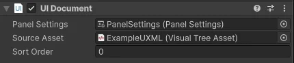

Important: UI Document components is obsolete and superseded by the Panel Renderer component. Panel Renderer provides the same functionality but adds more features and performance improvements. It has better World Space UI compatibility. For migration steps, refer to Migration to Panel Renderer.
A UI Document component references a UXML document and a Panel Settings asset. It serves as a bridge between the scene and a UXML document.
To connect a UI Document component to a panel, assign a Panel Settings asset to the UI Document component. The Panel Settings asset defines the panel in the scene where the UI is rendered. The UI Document component uses this panel to render the UXML document it references.
Because the UI Document component has been deprecated, you can’t add the component to new GameObjects in the Unity Editor. Existing UI Document components in your project will continue to work, if they have already been assigned to a GameObject. You can configure them as needed:

Unity loads a UI Document component’s source UXML documents when it calls the OnEnable() method on the component. To ensure the visual tree loads correctly, add logic to interact with the controls inside the OnEnable() method. This means your script must respond to OnEnable() and OnDisable() to safely reference visual elements from your UXML documents.
A UI Document component clears its contents when it responds to the OnEnable() and OnDisable() methods. This approach removes UI elements that the UI Document won’t reuse soon and effectively clears the associated resources. Additionally, if a UI Document component isn’t assigned with a Panel Settings asset, it automatically clears its contents.
To hide a UI element that’s likely to be reused soon or needs to appear quickly to avoid an initialization penalty, set the display of the UIDocument.rootVisualElement to none. You can also use this to hide a UI element component that’s part of a larger UI hierarchy.
The Panel Renderer component has been introduced as a replacement for the UI Document component. It addresses several limitations of the UI Document component:
Lifecycle management: UI Document’s direct rootVisualElement access made lifecycle control difficult, requiring workarounds that often failed or caused bugs. Panel Renderer uses UIReloaded callbacks for reliable UI reloading during OnEnable and LiveReload events. Native rendering: UI Document required hidden companion components for rendering, causing complications in Editor and Play modes. Panel Renderer is a native Renderer component that handles all UI rendering directly. Content persistence: UI Document destroys all content when disabled and recreates it when re-enabled, forcing users to implement non-standard caching solutions. Panel Renderer preserves UI content in memory when disabled.
While UI Document remains supported for existing projects, migrate to Panel Renderer for better performance and broader capabilities. The following sections provide guidance on migrating from UI Document to Panel Renderer.
If you added UI Document components through the Inspector window, follow these steps to migrate them to Panel Renderer components:
void OnEnable()
{
var uiDocument = GetComponent<UIDocument>();
myButton = uiDocument.rootVisualElement.Q<Button>();
}
Update it to:
void OnEnable()
{
GetComponent<PanelRenderer>().RegisterUIReloadCallback(OnUIReload);
}
void OnDisable()
{
GetComponent<PanelRenderer>().UnregisterUIReloadCallback(OnUIReload);
}
void OnUIReload(PanelRenderer renderer, VisualElement rootElement)
{
myButton = rootElement.Q<Button>();
}
If you added a UI Document component with AddComponent<UIDocument>() in the script, use AddComponent<PanelRenderer>() instead.
Before:
var uiDocument = gameObject.AddComponent<UIDocument>();
uiDocument.sourceAsset = myUXMLAsset;
After:
var panelRenderer = gameObject.AddComponent<PanelRenderer>();
panelRenderer.sourceAsset = myUXMLAsset;